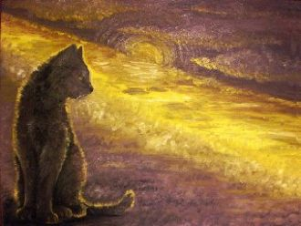
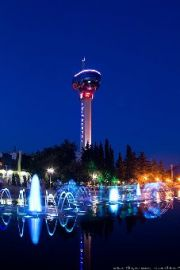
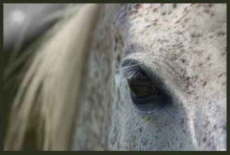

Если нам начать сначалаИ осуществить мои мечты...Если б только не молчал ты,Подошёл, обнял, и улетели б вместе мы

Hey youCan I learn your flavour?It's brand newNow it's in the papersAll I seem to seeMust be something underneath
Как же глупо, как же странноОсень к нам пришла нежданно.Так наивно нам казалось,Что лето вечно продолжалось.Так вести себя без лести.
Diz pra eu ficar muda faz cara de mistérioTira essa bermuda que eu quero você sérioTramas do sucesso mundo particular
Son las cinco de la mañana y yo no he dormido nadaPensando en tu belleza en loco voy a pararEl insomnio es mi castigo, tu amor será mi alivio
Налегке мы плывём с ветерком.В сентябре, босиком мы тайком. По щеке проведи ты рукой,Уголки моих губ успокой.И что меня ждёт?
Даже если не сейчася мелькну в твоих глазахкаждой клеточкой своейя тебя любить умею (умею)
Мягкий шёлк простынейМне напомнит нежность руки твоей.Мне не спится опять,В эту ночь могу я лишь мечтать.
The morning paperLook in the mirrorOn your key-chainOr in the coffee spoonOn your shirt sleeveIn the flat-screenIn your mailbox
Dejemos de dar vueltasQue ya me estoy mareandoTe estuve observandoY no me dejas de mirar
Солнце восходит вновь за горами. Я обнимаю небо руками, счастье встречаю. И забываю всё вокруг с тобой.
Гуляли с тобой и были вдвоём.Стояла берёза, косой, как наш дом.И в доме том стоял наш камин,Пылал он огнём, и грел он наш сон.
Харах нудэнд минь оч гялалзахадХайрын толиноос чи минь мишээнэХонгор бусгуй чамайг хараадХорвоо бид хоёр хослон дуулна

Июльский вечер, воскресенье,По набережной полосеИду во всей своей красеИ в наилучшем настроении.
Я сегодня в селе Чуть-чуть на веселе Громко песню пою Про богиню свою
Небо, вышитое солнцаНевесомой канителью,На твой тонкий стан прольётсяЗолотою карамелью.Эти плечи, эти рукиМанят сладкою мечтою
It's hard to remember how it felt beforeNow I found the love of my life...Passes things get more comfortableEverything is going right
Дождик случайный, ночь синеокаЯ так печальна и одинокаСправа и слева - скучное местоЯ королева без королевстваСправа и слева - скучное место

Я дарю печальный свой взгляд тебе,Он может всё рассказать,Он должен всё объяснить сейчас!Посмотри, как звёзды глядят с небес,Им одиноко там,
В плену немыслимых идей,Теряя облик, словно тень,Найду свой путь из мира грёзИ растекусь рекой из слёз.Когда рассвет сменяет закат,